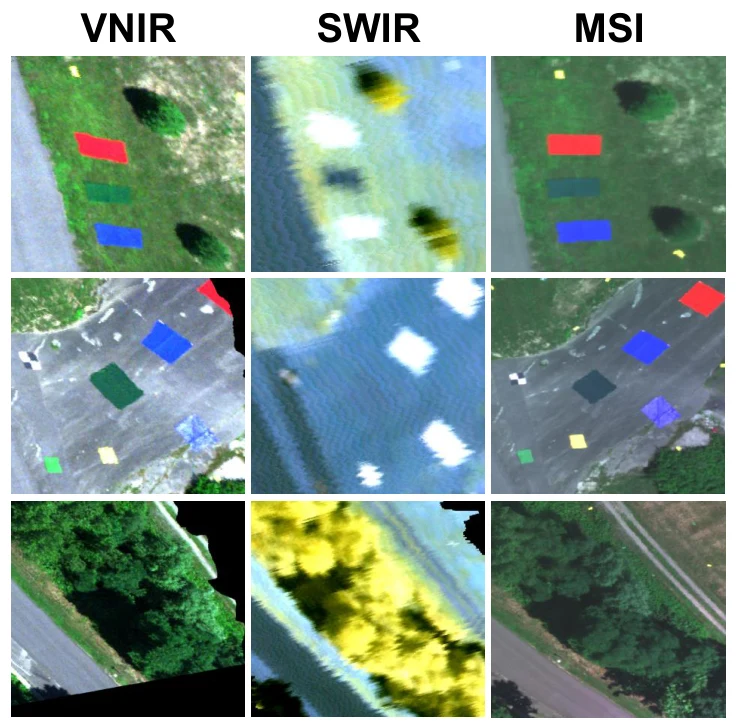
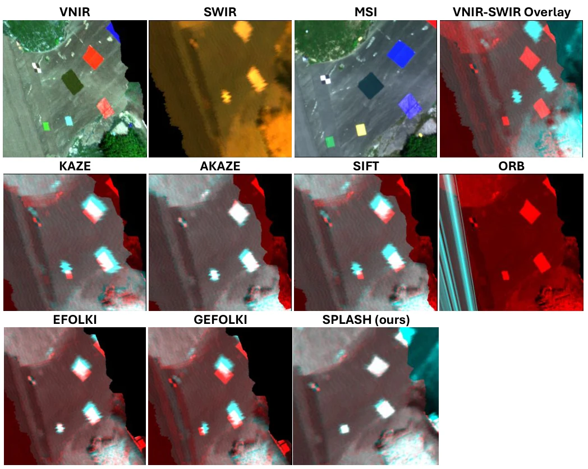
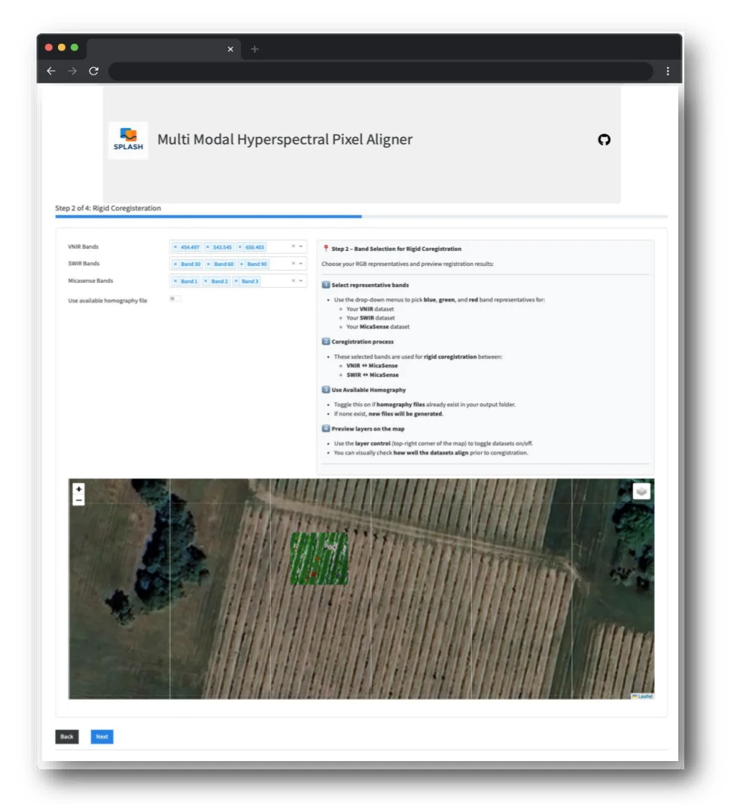

Computer vision
SPLASH: Multimodal Drone Hyperspectral Fusion

Aligning VNIR and SWIR pushbroom imagery from separate drones through global, row-wise, and elastic correction.
Overview
SPLASH (Spatial Elastic Harmonization) is a computer-vision framework I developed to align visible–near-infrared (VNIR) and shortwave-infrared (SWIR) hyperspectral imagery collected by pushbroom sensors on separate drones. Using framing-array multispectral imagery as a spatial reference, it combines three stages: rigid coregistration to correct global offsets, ShapeShifter correction to reduce row-wise distortions caused by platform roll, and elastic registration to refine remaining local misalignment between hyperspectral cubes. This workflow improves spatial correspondence across sensors, supporting spectral fusion and downstream analysis. I also built interactive graphical interfaces and desktop utilities to guide users through data processing, inspect alignment, and visualize results, making the methods accessible within laboratory workflows.
A closer look


